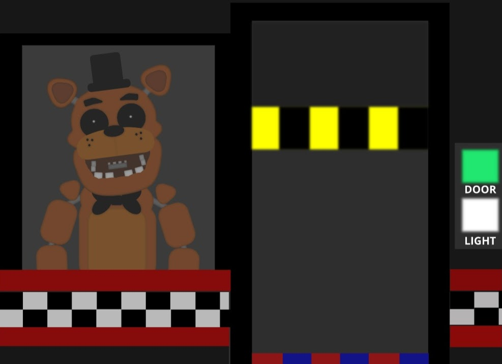
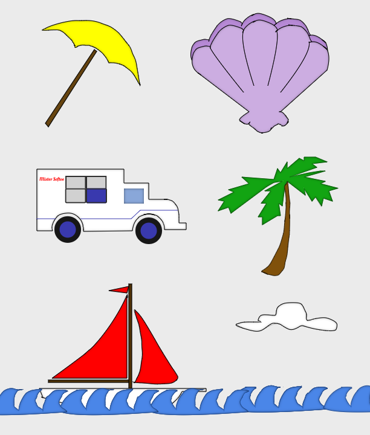
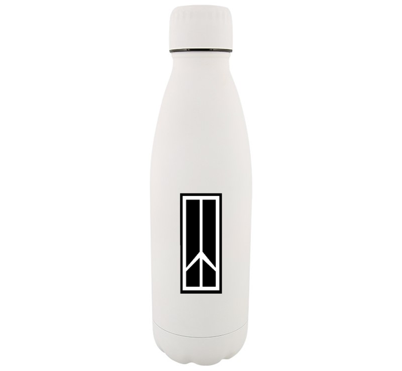
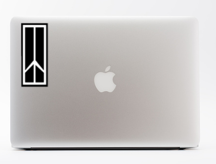
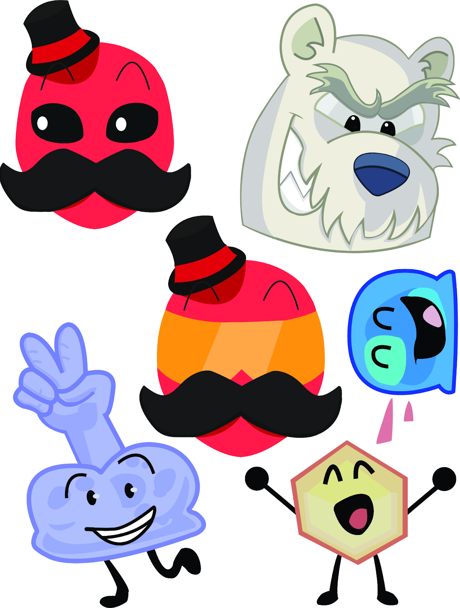

Freddy Fazbear and Office drawn with Shapes Tool (in a different illustrator site)
For Freddy, I used mostly circles and squares
(the majority of them being round-cornered) and for the Office,
I used squares as the majority of the environment is more sharp.
Starter's Template

Shapes traced from a starter's template.
I used the Pen Tool to trace on top of templates and created different versions from the template,
adding some shading and color. (in a different illustrator site)
Vinyl Sticker Design
Oldsmobile Logo (drawn with Pen Tool).

Digital Proof 1 (sticker on waterbottle).

Digital Proof 2 (sticker on laptop).
Vinyl Sticker Design
Oldsmobile Logo (drawn with Pen Tool).Digital Proof 1 (sticker on waterbottle).Digital Proof 2 (sticker on laptop).
Vinyl Sticker Design
Oldsmobile Logo (drawn with Pen Tool).
Digital Proof 1 (sticker on waterbottle).Digital Proof 2 (sticker on laptop).
Vinyl Sticker Design
Oldsmobile Logo (drawn with Pen Tool).Digital Proof 1 (sticker on waterbottle).Digital Proof 2 (sticker on laptop).
For this, I simply traced over the Oldsmobile logo to create a sticker design. (in a different illustrator site).
Sticker Sheet

Various characters traced from personal sketches for a sticker sheet concept.
Sticker Sheet
Various characters traced from personal sketches for a sticker sheet concept.
Sticker Sheet
Various characters traced from personal sketches for a sticker sheet concept.
Sticker Sheet
Various characters traced from personal sketches for a sticker sheet concept.
Various designs of fictional characters drawn with shape and pen tool in Adobe Illustrator,
including characters from Battle of Dream Island (bottom two),
Inanimate Insanity (middle right),
Club Penguin (top right), and an OC (middle and top left).